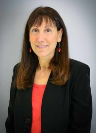

Randi Most, Ph.D., ABN
Board Certified Neuropsychologist
Dr. Most is a Diplomate of the American Board of Professional Neuropsychology and is located in Jacksonville, Florida.
Dr. Most has retired and is no longer providing services. If you are a former patient seeking records, she can be reached here:
